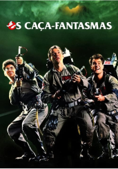

Não sabe o que assistir?

Os Caça-Fantasmas
Em Nova York Peter Venkman, Ray Stantz e Egon Spengler são três cientistas do departamento de psicologia da Columbia University, que se dedicam ao estudo de casos paranormais. Quando a subvenção termina eles são despedidos e Venkman sugere que abram um negócio próprio, a exterminadora de fantasmas Ghostbusters. Inicialmente eles só têm despesas e nenhum cliente, mas eis que surge Dana Barrett, uma violoncelista que teve uma experiência assustadora em seu apartamento.
Ops, hoje não é dia de assistir filme.
Bora codar!🚀
Clique novamente para uma nova busca!
Clique em "Encontrar filme" que traremos informações de algum filme para você assistir hoje.